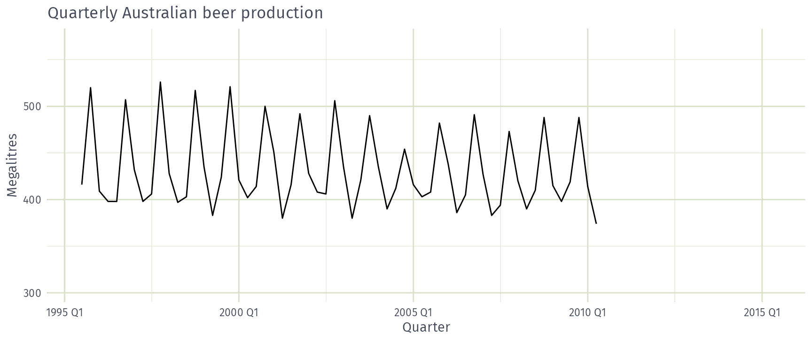
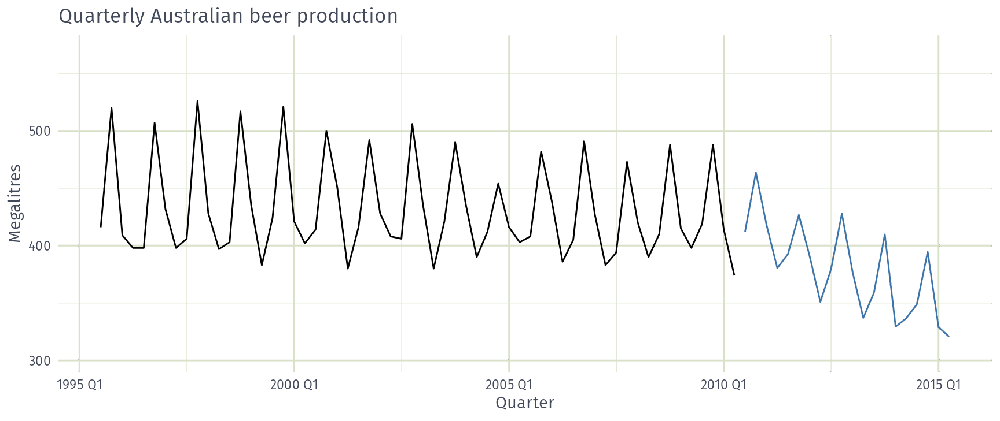
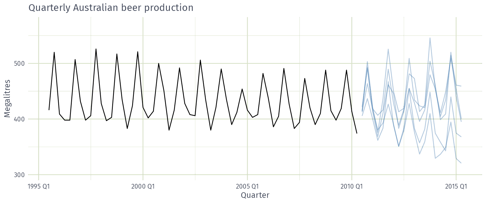
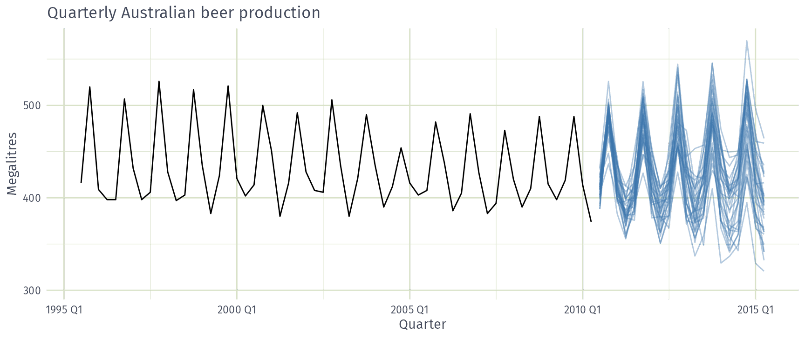
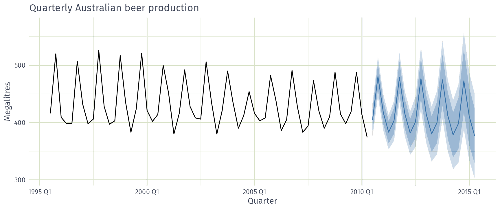
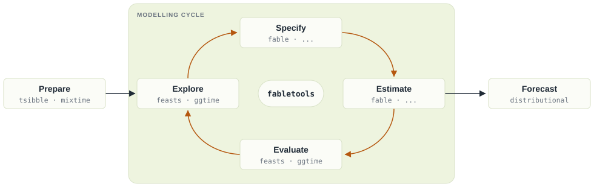
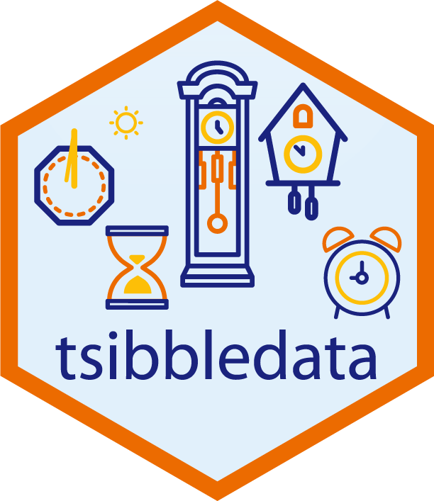
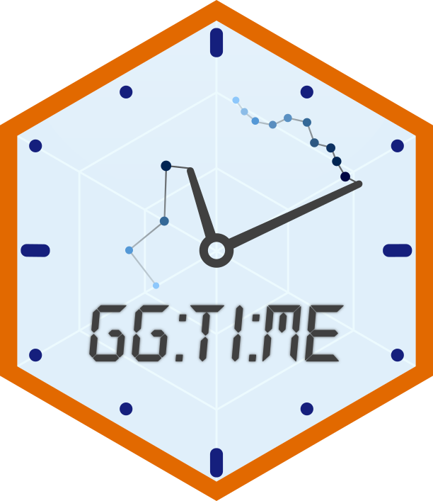
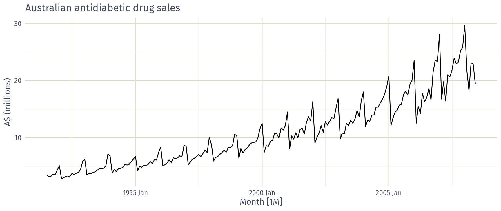

 AFRICAST
AFRICASTTidy time series & forecasting in R
Basics of time series and data structures
Session 1 of 10


workshop.f4sg.org/africastForecasting for Social Good
Introduction to forecasting
What is a forecast?
Estimating how a sequence of observations will continue into the future, using all information available now.




What data do we need?
- Historical data on the variable to forecast
- Past and future values of predictors
- Deterministic (e.g. holidays)
- Stochastic (e.g. temperature)
- Expert knowledge and context
- New information
Why forecast?
Why do you use forecasts?
| Decision | Forecast |
|---|---|
| Build a new hospital in the next 10 years? | Population and patient demand, years ahead |
| Call centre staff needed next week? | Call volumes, hours to days ahead |
| Vaccine doses needed next month? | Doses by region, weeks ahead |
The decision sets what to forecast and how far ahead.
Forecasting workflow

Packages for this course
Time series data

Example datasets
Features and decompositions

Time series graphics
Forecasting models
Packages for this course
-- Attaching packages ------------------------------ fpp3 1.0.3 --v tibble 3.3.1 v tsibble 1.2.0.9000
v dplyr 1.2.1 v tsibbledata 0.4.1
v tidyr 1.3.2 v ggtime 1.1.0.9000
v lubridate 1.9.5 v feasts 0.5.0.9000
v ggplot2 4.0.3 v fable 0.5.0.9000Time series data
Time series data
- Four-yearly Olympic winning times
- Annual Google profits
- Quarterly Australian beer production
- Monthly rainfall
- Weekly retail sales
- Daily IBM stock prices
- Hourly electricity demand
- 5-minute freeway traffic counts
- Time-stamped stock transaction data
Your time series
What time series data do you work with?
What makes it a time series?
Observations + when they happened.
- The time column is the index
- Observations are ordered in time
- Regular intervals define the frequency (yearly, quarterly, …)
tsibble objects
A tsibble has three parts
A tsibble stores one or more time series in a table.
- Index: when
- Key: which series (optional)
- Measures: what was observed
Works with dplyr verbs (filter(), mutate(), …).
tsibble objects
# A tsibble: 15,150 x 6 [1Y]
# Key: Country [263]
Year Country GDP Imports Exports Population
<dbl> <fct> <dbl> <dbl> <dbl> <dbl>
1 1960 Afghanistan 537777811. 7.02 4.13 8996351
2 1961 Afghanistan 548888896. 8.10 4.45 9166764
3 1962 Afghanistan 546666678. 9.35 4.88 9345868
4 1963 Afghanistan 751111191. 16.9 9.17 9533954
5 1964 Afghanistan 800000044. 18.1 8.89 9731361
6 1965 Afghanistan 1006666638. 21.4 11.3 9938414
7 1966 Afghanistan 1399999967. 18.6 8.57 10152331
8 1967 Afghanistan 1673333418. 14.2 6.77 10372630
9 1968 Afghanistan 1373333367. 15.2 8.90 10604346
10 1969 Afghanistan 1408888922. 15.0 10.1 10854428
# ℹ 15,140 more rowsIndex
Key
Measures
tsibble objects
# A tsibble: 24,320 x 5 [1Q]
# Key: Region, State, Purpose [304]
Quarter Region State Purpose Trips
<qtr> <chr> <chr> <chr> <dbl>
1 1998 Q1 Adelaide SA Business 135.
2 1998 Q2 Adelaide SA Business 110.
3 1998 Q3 Adelaide SA Business 166.
4 1998 Q4 Adelaide SA Business 127.
5 1999 Q1 Adelaide SA Business 137.
6 1999 Q2 Adelaide SA Business 200.
7 1999 Q3 Adelaide SA Business 169.
8 1999 Q4 Adelaide SA Business 134.
9 2000 Q1 Adelaide SA Business 154.
10 2000 Q2 Adelaide SA Business 169.
# ℹ 24,310 more rowsIndex
Keys
Measure
Overnight trips (thousands), quarterly, by region and purpose of travel.
The tsibble index
For annual data, integer years work as the index:
The tsibble index
# A tibble: 5 × 2
Month Observation
<chr> <dbl>
1 2019 Jan 50
2 2019 Feb 23
3 2019 Mar 34
4 2019 Apr 30
5 2019 May 25"2019 Jan"is just text- More frequent than yearly? Use a time class
The tsibble index
The tsibble index
Common time index variables can be created with these functions:
| Frequency | Function |
|---|---|
| Annual | start:end |
| Quarterly | yearquarter() |
| Monthly | yearmonth() |
| Weekly | yearweek() |
| Daily | as_date(), ymd() |
| Sub-daily | as_datetime(), ymd_hms() |
Converting dates
Often data is provided as dates, even if it isn’t daily.
Looking ahead: mixtime
One family of linear time classes, including year() and datetime():
<mixtime[4]>
[1] 2026 2026 Q4 2026 Oct 2026-10-01Any granularity: pick a chronon (one time step) and call linear_time():
<mixtime[4]>
[1] 2024-01-01 00:00 2024-01-01 00:15 2024-01-01 00:30 2024-01-01 00:45yearmonth(my_date)islinear_time(my_date, chronon = cal_gregorian$month(1L))
Looking ahead: mixtime
More time types, beyond this course:
<mixtime[1]>
[1] 2026-10-06 01:30:00 EAT<mixtime[1]>
[1] 2026-Oct<mixtime[1]>
[1] Thu<mixtime[3]>
[1] 2026 Oct 2026 Nov 2026 DecWhat a tsibble checks
- Index + key must uniquely identify each row:
as_tsibble()errors on duplicates (find them withduplicates()) - The interval is shown in the header:
[1Y],[1Q],[1M], … - Missing time steps are implicit gaps: find them with
has_gaps(), make them explicit withfill_gaps()
Example: Australian prison population
Australian prison population
Read a csv file
Quarterly prisoner counts from the ABS, 2005 Q1 to 2016 Q4, by state, gender, legal status and indigenous status (ATSI: Aboriginal and Torres Strait Islander).
# A tibble: 3,072 × 6
date state gender legal indigenous count
<date> <chr> <chr> <chr> <chr> <dbl>
1 2005-03-01 ACT Female Remanded ATSI 0
2 2005-03-01 ACT Female Remanded Other 2
3 2005-03-01 ACT Female Sentenced ATSI 0
4 2005-03-01 ACT Female Sentenced Other 0
5 2005-03-01 ACT Male Remanded ATSI 7
6 2005-03-01 ACT Male Remanded Other 58
7 2005-03-01 ACT Male Sentenced ATSI 0
8 2005-03-01 ACT Male Sentenced Other 0
9 2005-03-01 NSW Female Remanded ATSI 51
10 2005-03-01 NSW Female Remanded Other 131
# ℹ 3,062 more rowsConvert to a time class
# A tibble: 3,072 × 7
date state gender legal indigenous count quarter
<date> <chr> <chr> <chr> <chr> <dbl> <qtr>
1 2005-03-01 ACT Female Remanded ATSI 0 2005 Q1
2 2005-03-01 ACT Female Remanded Other 2 2005 Q1
3 2005-03-01 ACT Female Sentenced ATSI 0 2005 Q1
4 2005-03-01 ACT Female Sentenced Other 0 2005 Q1
5 2005-03-01 ACT Male Remanded ATSI 7 2005 Q1
6 2005-03-01 ACT Male Remanded Other 58 2005 Q1
7 2005-03-01 ACT Male Sentenced ATSI 0 2005 Q1
8 2005-03-01 ACT Male Sentenced Other 0 2005 Q1
9 2005-03-01 NSW Female Remanded ATSI 51 2005 Q1
10 2005-03-01 NSW Female Remanded Other 131 2005 Q1
# ℹ 3,062 more rowsRemove the old date column
# A tibble: 3,072 × 6
state gender legal indigenous count quarter
<chr> <chr> <chr> <chr> <dbl> <qtr>
1 ACT Female Remanded ATSI 0 2005 Q1
2 ACT Female Remanded Other 2 2005 Q1
3 ACT Female Sentenced ATSI 0 2005 Q1
4 ACT Female Sentenced Other 0 2005 Q1
5 ACT Male Remanded ATSI 7 2005 Q1
6 ACT Male Remanded Other 58 2005 Q1
7 ACT Male Sentenced ATSI 0 2005 Q1
8 ACT Male Sentenced Other 0 2005 Q1
9 NSW Female Remanded ATSI 51 2005 Q1
10 NSW Female Remanded Other 131 2005 Q1
# ℹ 3,062 more rowsDeclare the index and keys
# A tsibble: 3,072 x 6 [1Q]
# Key: state, gender, legal, indigenous [64]
state gender legal indigenous count quarter
<chr> <chr> <chr> <chr> <dbl> <qtr>
1 ACT Female Remanded ATSI 0 2005 Q1
2 ACT Female Remanded ATSI 1 2005 Q2
3 ACT Female Remanded ATSI 0 2005 Q3
4 ACT Female Remanded ATSI 0 2005 Q4
5 ACT Female Remanded ATSI 1 2006 Q1
6 ACT Female Remanded ATSI 1 2006 Q2
7 ACT Female Remanded ATSI 1 2006 Q3
8 ACT Female Remanded ATSI 0 2006 Q4
9 ACT Female Remanded ATSI 0 2007 Q1
10 ACT Female Remanded ATSI 1 2007 Q2
# ℹ 3,062 more rowsExample: Australian pharmaceutical sales
Australian Pharmaceutical Benefits Scheme
Australian Pharmaceutical Benefits Scheme
The PBS is the Australian government drug subsidy scheme.
- Subsidises many pharmacy drugs
- Cost the government A$19.1 billion in 2024–25 (about 0.7% of GDP)
- Budget relies on forecasts of drug usage
PBS data: monthly, July 1991 to June 2008
Scripts(prescriptions) andCost(A$)- By drug type (ATC2 x84), concession (x2) and patient type (x2)
- ATC: Anatomical Therapeutic Chemical classification
Working with tsibble objects
# A tsibble: 67,596 x 9 [1M]
# Key: Concession, Type, ATC1, ATC2 [336]
Month Concession Type ATC1 ATC1_desc ATC2 ATC2_desc Scripts Cost
<mth> <chr> <chr> <chr> <chr> <chr> <chr> <dbl> <dbl>
1 1991 Jul Concessional Co-payments A Alimentary tract and metab… A01 STOMATOL… 18228 67877
2 1991 Aug Concessional Co-payments A Alimentary tract and metab… A01 STOMATOL… 15327 57011
3 1991 Sep Concessional Co-payments A Alimentary tract and metab… A01 STOMATOL… 14775 55020
4 1991 Oct Concessional Co-payments A Alimentary tract and metab… A01 STOMATOL… 15380 57222
5 1991 Nov Concessional Co-payments A Alimentary tract and metab… A01 STOMATOL… 14371 52120
6 1991 Dec Concessional Co-payments A Alimentary tract and metab… A01 STOMATOL… 15028 54299
7 1992 Jan Concessional Co-payments A Alimentary tract and metab… A01 STOMATOL… 11040 39753
8 1992 Feb Concessional Co-payments A Alimentary tract and metab… A01 STOMATOL… 15165 54405
9 1992 Mar Concessional Co-payments A Alimentary tract and metab… A01 STOMATOL… 16898 61108
10 1992 Apr Concessional Co-payments A Alimentary tract and metab… A01 STOMATOL… 18141 65356
# ℹ 67,586 more rowsfilter(): choose rows
# A tsibble: 816 x 9 [1M]
# Key: Concession, Type, ATC1, ATC2 [4]
Month Concession Type ATC1 ATC1_desc ATC2 ATC2_desc Scripts Cost
<mth> <chr> <chr> <chr> <chr> <chr> <chr> <dbl> <dbl>
1 1991 Jul Concessional Co-payments A Alimentary tract and meta… A10 ANTIDIAB… 89733 2.09e6
2 1991 Aug Concessional Co-payments A Alimentary tract and meta… A10 ANTIDIAB… 77101 1.80e6
3 1991 Sep Concessional Co-payments A Alimentary tract and meta… A10 ANTIDIAB… 76255 1.78e6
4 1991 Oct Concessional Co-payments A Alimentary tract and meta… A10 ANTIDIAB… 78681 1.85e6
5 1991 Nov Concessional Co-payments A Alimentary tract and meta… A10 ANTIDIAB… 70554 1.69e6
6 1991 Dec Concessional Co-payments A Alimentary tract and meta… A10 ANTIDIAB… 75814 1.84e6
7 1992 Jan Concessional Co-payments A Alimentary tract and meta… A10 ANTIDIAB… 64186 1.56e6
8 1992 Feb Concessional Co-payments A Alimentary tract and meta… A10 ANTIDIAB… 75899 1.73e6
9 1992 Mar Concessional Co-payments A Alimentary tract and meta… A10 ANTIDIAB… 89445 2.05e6
10 1992 Apr Concessional Co-payments A Alimentary tract and meta… A10 ANTIDIAB… 97315 2.23e6
# ℹ 806 more rowsselect(): choose columns
# A tsibble: 816 x 4 [1M]
# Key: Concession, Type [4]
Month Concession Type Cost
<mth> <chr> <chr> <dbl>
1 1991 Jul Concessional Co-payments 2092878
2 1991 Aug Concessional Co-payments 1795733
3 1991 Sep Concessional Co-payments 1777231
4 1991 Oct Concessional Co-payments 1848507
5 1991 Nov Concessional Co-payments 1686458
6 1991 Dec Concessional Co-payments 1843079
7 1992 Jan Concessional Co-payments 1564702
8 1992 Feb Concessional Co-payments 1732508
9 1992 Mar Concessional Co-payments 2046102
10 1992 Apr Concessional Co-payments 2225977
# ℹ 806 more rowssummarise(): combine over keys
# A tsibble: 204 x 2 [1M]
Month total_cost
<mth> <dbl>
1 1991 Jul 3526591
2 1991 Aug 3180891
3 1991 Sep 3252221
4 1991 Oct 3611003
5 1991 Nov 3565869
6 1991 Dec 4306371
7 1992 Jan 5088335
8 1992 Feb 2814520
9 1992 Mar 2985811
10 1992 Apr 3204780
# ℹ 194 more rowsmutate(): create variables
# A tsibble: 204 x 3 [1M]
Month total_cost cost_m
<mth> <dbl> <dbl>
1 1991 Jul 3526591 3.53
2 1991 Aug 3180891 3.18
3 1991 Sep 3252221 3.25
4 1991 Oct 3611003 3.61
5 1991 Nov 3565869 3.57
6 1991 Dec 4306371 4.31
7 1992 Jan 5088335 5.09
8 1992 Feb 2814520 2.81
9 1992 Mar 2985811 2.99
10 1992 Apr 3204780 3.20
# ℹ 194 more rowscost_m is the total cost in A$ millions.
Save the result
# A tsibble: 204 x 3 [1M]
Month total_cost cost_m
<mth> <dbl> <dbl>
1 1991 Jul 3526591 3.53
2 1991 Aug 3180891 3.18
3 1991 Sep 3252221 3.25
4 1991 Oct 3611003 3.61
5 1991 Nov 3565869 3.57
6 1991 Dec 4306371 4.31
7 1992 Jan 5088335 5.09
8 1992 Feb 2814520 2.81
9 1992 Mar 2985811 2.99
10 1992 Apr 3204780 3.20
# ℹ 194 more rowsPlot the result

Your turn
Using tourism
- Find the quarterly total
Tripsfor eachState - Challenge: Which
Statehad the mostTripsover the whole period?
Using PBS
- Find the total monthly
Scriptsfor ATC2"H02"
Hints
summarise()always keeps the index- Q1:
group_by(State), thensummarise() - Q2:
as_tibble()first: it drops the tsibble structure, sosummarise()no longer keeps the index - Q3:
filter(), thensummarise()
Recap
- A tsibble has an index, keys and measures
- Index + keys uniquely identify each row
- The index needs a time class (
yearmonth(),as_date(), …) - Use dplyr verbs to wrangle tsibbles
summarise()combines over keys, keeping the index